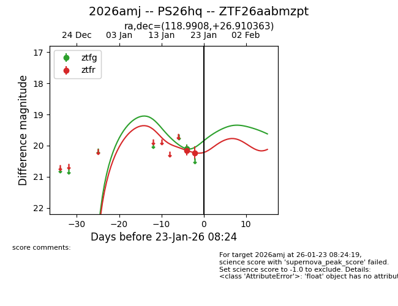
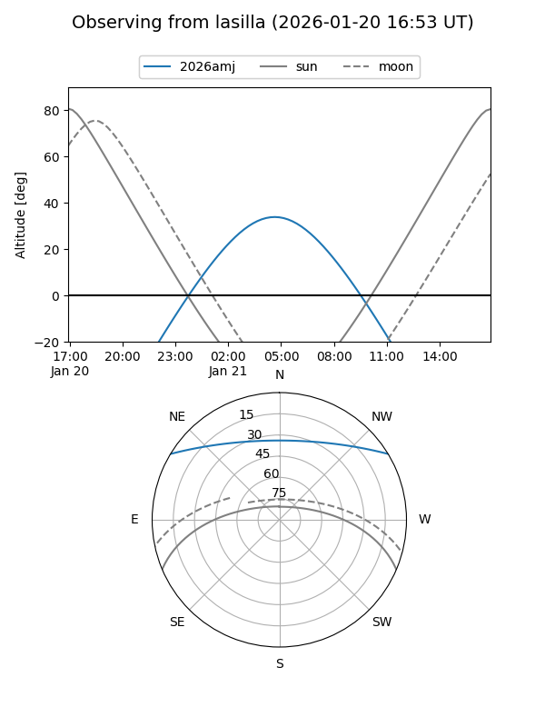
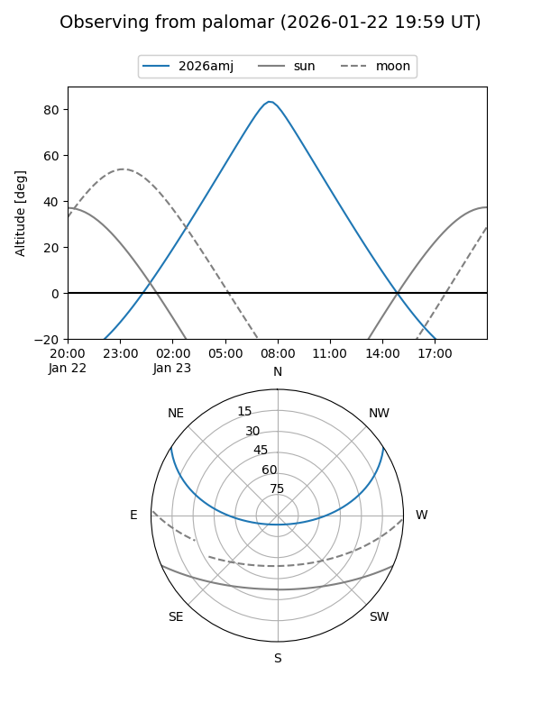
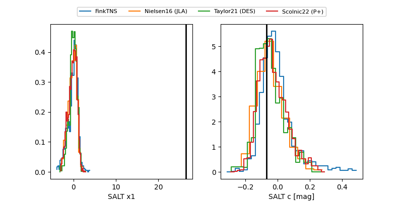

2026amj
Target 2026amj at 2026-01-23 08:26
Aliases and brokers:
FINK: link
Lasair: link
ALeRCE: link
TNS: link
YSE: link
alt names
ZTF26aabmzpt (ztf,fink_ztf)
2026amj (tns,yse)
PS26hq (panstarrs)
Coordinates:
equatorial (ra, dec) = 118.9908,+26.91036
equatorial (HMS+DMS) = 07:55:57.79,+26:54:37.31
galactic (l, b) = (194.2387,+25.26937)
Flags:
Photometry:
last ztfg=20.10, ztfr=20.23
1 ztfg, 2 ztfr detections
Lightcurve

Visibility


Additional plots
